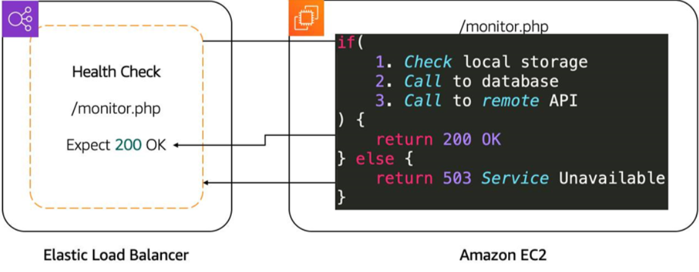
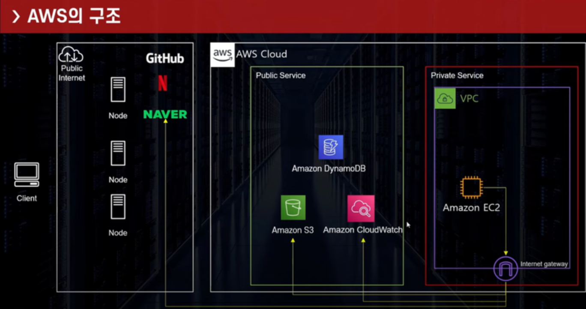

Storage and Database
Week3
AWS
Kwangmin Kim
March 18, 2023
- 운영자가 문제에 대하여 능동적으로 대처가 가능
- 운영 중단이 발생하였을 때 알려주는 것은 대처를 할 수 없으며 모니터링을 통해 Metric을 확인하여 사전에 운영 중단 방지를 위한 자동, 수동으로 수행하여 해결
- 리소스의 성능과 안정성을 개선
- 다양한 리소스를 모니터링하면 솔루션이 시스템으로 작동하는 방식을 전체적으로 파악할 수 있으며 병목 현상 또는 비효율적 아키텍처를 발견
- 보안 위협 및 이벤트를 인식, 리소스에 액세스하는 비정상적인 트래픽 급증 또는 비정상적인 IP 주소와 같은 이상 징후를 발견
- 비즈니스 의사 결정에 도움을 줌
- 앱의 새 기능을 시작했는데 이 기능이 사용되고 있는지 확인할 때 애플리케이션 수준 Metric을 수집하고 새 기능을 사용하는 사용자 수를 체크
- AWS에서 제공하는 AWS서비스/App의 모니터링 서비스
- Public 서비스(인터넷을 통해서 접근 또는 Interface Endpoint로 접근)
- 로그, 지표, 이벤트 등의 운영데이터를 수집하여 시각화 처리
- 경보 생성을 통해 자동화된 대응 가능
- Metric은 CloudWatch에 게시된 시간순서 데이터 포인트 집합
- AWS 서비스/Application의 Performance를 모니터링 하기 위해 Metric을 생성
- 생성 예시
- 솔루션에 따라서 다양한 형태의 데이터 Metric을 생성
- EC2의 경우 CPU, 네트워크, 디스크 성능 등의 활용률 체크
- S3의 경우 CPU는 의미가 없어서 생성하지 않고 전체 크기 또는 버킷의 개체 수
- RDB의 경우 DB연결, 인스턴스의 CPU사용률, 디스크 공간 사용량
- CloudWatch Agent/ API를 활용하여 Custom Metric을 생성
- EC2의 Memory 사용량(외부 Public에서 볼 수 없는 것도 수집 가능)
- Private 영역은 CloudWatch 자체 서비스에서 확인 불가 #### Alarm
- 수집된 Metric 값에 따라 Alarm 생성
- 이에 따라, 다양한 방법으로 대응 가능(SNS로 Lambda 실행, 이메일 발송) #### Log수집 및 관리 #### 대시보드
- Namespace : CloudWatch metric의 Container이며 필수로 작성
- Data Points : Metric을 구성하는 데이터 단위로 UTC를 권장
- Period : 시간을 기준으로 묶어서 보는 개념으로 60배수, 보관기간에 따라서 확인 가능한 조회기간도 상이함(1분 단위는 15일 -> 15일 이후에는 5분 단위로 확인가능)
- 2주 이상 데이터 업데이트 안된 Metric은 콘솔에서 확인 불가(CLI에서만 확인가능)
- Dimension : Tag/Category이며 Key/Value로 구성되며 Metric을 구분할 때 사용
- 예: Dimension : (Server=prod, Domain=Seoul)
- Optimizing Solutions on AWS
- Improve Application Availability
- redundancy
- S3, DynamoDB는 이미 이중화로 설계되어짐.
- 문제는 EC2
- Use a Second Availability Zone
- 서로 다른 AZ에 배치하는 것이 중요.
- 하지만 이런 문제는 인스턴스가 두개 이상이므로 다른 문제 발생.
- Manage Replication, Redirection, and High Availability
- Create a Process for Replication
- DNS를 통한 접속 -> 결국 ip를 변경해야하기 때문에 downtime 존재
- Load balancer
- 로드밸런서를 이용하면 수많은 요청을 분산 시킬 수 있음.
- public ip를 여러 개 사용할 필요 없음
- Create a Process for Replication
- redundancy
- Improve Application Availability
- Route Traffic with Amazon Elastic Load Balancing
- What’s a Load Balancer?
- 작업을 분산
- Features of ELB
- 컨테이너, ip, aws lamda, ec2 모두 분산 가능
- Health Checks 
- ELB Components
- Listeners
- client
- Target groups
- Ec2, lamda 등 타겟 대상
- Rules
- 매칭시키기 위한 룰 존재
- Client의 Source ip와 트래픽을 전송할 target groups
- Listeners
- ALB(Application Load Balancer)
- 특징
- ALB routes traffic based on request data.
- Send responses directly to the client.
- ALB supports TLS offloading.
- Authenticate users.
- Secure traffic.
- ALB uses the round-robin routing algorithm.
- ALB uses the least outstanding request routing algorithm.
- ALB has sticky sessions.
- 특징
- Network Load Balancer
- 특징
- Network Load Balancer supports TCP, UDP, and TLS protocols.
- NLB uses a flow hash routing algorithm.
- NLB has sticky sessions.
- NLB supports TLS offloading.
- NLB handles millions of requests per second.
- NLB supports static and elastic IP addresses.
- NLB preserves source IP address.
- 특징
- ELB types 그림 10
- GLB(Gateway Load Balancer)
- 다른 곳의 application traffic으로 라우팅
- GLB(Gateway Load Balancer)
- What’s a Load Balancer?
- Amazon EC2 Auto Scaling 그림 11
- EC2의 과부화 발생하여 CloudWatch에 보고
- CloudWatch는 auto scailing을 실행
- 그러면 각 인스턴스가 필요한 만큼 수평적으로 확장성을 제공.
- EC2가 다시 정상화가 되면 확장된 EC2 자동 종료.
- IAM user - IAM group – IAM policy
- How to create permissions for a user
- Add the user to IAM group
- Copy permissions from an existing user
- Attach existing policies to the user
- AWS Organization
- 역할
- Automate account creation and management
- Create groups of accounts to reflect business needs
- Govern access to AWS services resources region by policies
- Set up single payment method for all AWS accounts with consolidated billing
- Share resources accross accounts
- AWS Organization을 만드는 연습
- 역할
- AWS Organization
- Plan ahead for the structure of organization
- Keep the master account free of any operational AWS resources
- Use AWS CloudTrail – track all AWS usage
- Apply least previlege practice to policies
- Assign policies to OU
- Test new and modified policies
- Use the APIs and AWS CloudFormation
- Authentication and authorization
- The user accesses an AWS account and resources
- Allowing resouces access to other resouces.
- Allow end users to access the applications
- Services
- AWS organizations : consolidated billing
- AWS IAM : users, groups and policies
- AWS Single Sign-ON (SSO)
- Amazon Cloud directory
- Amazon Congnito : Active directory
1 Monitoring on AWS Optimization
1.1 Monitoring
모니터링은 리소스의 운영 상태 및 사용에 대한 데이터를 수집하고 분석하는 기법으로 데이터를 수집, 분석 및 사용하여 IT 리소스 및 시스템에 대한 의사 결정을 내리거나 질문에 답변하는 작업이며 모니터링을 통해 수집한 데이터를 사용하여 리소스 과다 사용, 응용 프로그램 결함, 리소스 구성 오류 또는 보안 관련 이벤트와 같은 이벤트로 인해 발생하는 운영 문제를 확인 가능
1.2 Monitoring Benefit
1.3 Amazon CloudWatch
1.3.1 접근 방법
VPC의 Private Service에 직접 접근은 불가하며 Interface EndPoint를 설정하여 접근이 가능 
1.4 주요 기능
1.4.1 지표(Metric) 수집
1.5 Metric의 구성
1.5.1 Metric 예시
1.6 Monitoring Optimization
{kind=link}
{kind=link}
2 Shared Responsibility
2.1 Shared Responsibility
보안과 규정 준수는 AWS와 고객의 공동 책임입니다. 이 공유 모델은 AWS가 호스트 운영 체제 및 가상화 계층에서 서비스가 운영되는 시설의 물리적 보안에 이르기까지 구성 요소를 운영, 관리 및 제어하므로 고객의 운영 부담을 경감할 수 있습니다. 고객은 게스트 운영 체제(업데이트 및 보안 패치 포함) 및 다른 관련 애플리케이션 소프트웨어를 관리하고 AWS에서 제공한 보안 그룹 방화벽을 구성할 책임이 있습니다. 고객은 서비스를 선택할 때 신중하게 고려해야 합니다. 고객의 책임이 사용되는 서비스, IT 환경에서 이러한 서비스의 통합, 그리고 관계 법규에 다라 달라지기 때문입니다. 또한, 이러한 공동 책임의 특성은 배포를 허용하는 고객 제어권과 유연성을 제공합니다. 아래 차트에서 볼 수 있듯이 이러한 책임의 차이를 일반적으로 클라우드’의’ 보안과 클라우드’에서의’ 보안이라고 부릅니다.
2.1.1 AWS 책임 ‘클라우드의 보안’
AWS는 AWS 클라우드에서 제공되는 모든 서비스를 실행하는 인프라를 보호할 책임이 있습니다. 이 인프라는 AWS 클라우드 서비스를 실행하는 하드웨어, 소프트웨어, 네트워킹 및 시설로 구성됩니다.
2.1.1.1 고객 책임 ‘클라우드에서의 보안’
고객 책임은 고객이 선택하는 AWS 클라우드 서비스에 따라 달라집니다. 이에 따라 고객이 보안 책임의 일부로 수행해야 하는 구성 작업량이 정해집니다. 예를 들어, Amazon Elastic Compute Cloud (Amazon EC2) 같은 서비스는 Iaas(Ifrastructure as a Service)로 분류되고 고객이 필요한 모든 보안 구성 및 관리 작업을 수행하도록 요구합니다. Amazon EC2 인스턴스를 배포하는 고객은 게스트 운영 체제의 관리(업데이트, 보안 패치 등), 고객이 인스턴스에 설치한 모든 애플리케이션 소프트웨어 또는 유틸리티의 관리, 인스턴스별로 AWS에서 제공한 방화벽(보안 그룹이라고 부름)의 구성 관리에 대한 책임이 있습니다. Amazon S3 및 Amazon DynamoDB와 같은 추상화 서비스의 경우, AWS는 인프라 계층, 운영 체제, 플랫폼을 운영하고 고객은 데이터를 저장하고 검색하기 위해 엔드포인트에 액세스합니다. 고객은 데이터 관리(암호화 옵션 포함), 자산 분류, 적절한 허가를 부여하는 IAM 도구 사용에 책임이 있습니다.
2.2 Compliance
예상되는 사용 사례, 피드백 및 수요를 기반으로 규정 준수 노력의 범위에 서비스를 포함합니다. 서비스가 현재 가장 최근 평가 범위에 포함되어 있지 않다고 해서 서비스를 사용할 수 없다는 의미는 아닙니다. 데이터의 특성을 결정하는 것은 조직의 공동 책임 의 일부입니다 . AWS에서 구축하는 항목의 특성에 따라 서비스가 고객 데이터를 처리하거나 저장할지 여부와 고객 데이터 환경의 규정 준수에 어떤 영향을 미칠지 또는 그렇지 않을지 결정해야 합니다.
AWS 규정 준수 프로그램에 대한 자세한 내용은 https://aws.amazon.com/compliance/에서 확인할 수 있습니다.
2.3 Create Account
AWS Identity and Access Management(IAM)를 사용하면 AWS 서비스 및 리소스에 대한 액세스를 안전하게 관리할 수 있습니다. IAM을 사용하여 AWS 사용자 및 그룹을 생성 및 관리하고 권한을 사용하여 AWS 리소스에 대한 액세스를 허용 및 거부할 수 있습니다.
IAM은 추가 비용 없이 제공되는 AWS 계정의 기능입니다. 사용자가 다른 AWS 서비스를 사용한 경우에만 비용이 청구됩니다.
IAM 사용을 시작하거나 이미 AWS에 등록한 경우 AWS Management Console로 이동하여 이러한 IAM 모범 사례를 시작하십시오.
3 Quiz
Quiz
질문 1
What security mechanism can add an extra layer of protection to your AWS account in addition to a username password combination? ①Transport Layer Protocol or TCP ②Mult-factor Authentication or MFA ③Iris Scan Service or ISS ④Scure Bee Service or SBS
질문 2
If a user wanted to read from a DynamoDB table what policy would you attach to their user profile? ①AmazonDynamoDBFullAccess ②AWSLambdaInvocation-DynamoDB ③AmazonDynamoDBReadOnlyAccess ④AWSLambdaDynamoDBExecutionRole
질문 3
What are valid MFA or Multi-factor Authentication options available to use on AWS? Select all that apply. ①Gemalto token ②Blizzard Authenticator ③yubiKey ④Google Authenticator
AWS IoT button
질문 4
What format is an Identity and Access Management policy document in? ①XML ②HTML ③CSV ④JSON
질문 5
Which are valid options for interacting with your AWS account? Select all that apply. ①Command Line Interface ②Software Development Kit ③Application Programming Interface ④AWS Console